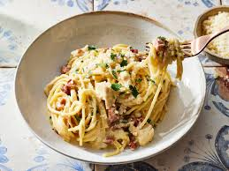

Chicken Carbonara Pasta Bake

This chicken carbonara pasta bake is the perfect Sunday dinner choice for the whole family.
Serve with a side of roasted vegetables, a salad, and some crusty bread to soak up extra sauce.
Ingredients:
- Pancetta: This chicken carbonara pasta bake recipe starts with pancetta.
- Spaghetti: You’ll need one 16-ounce package of spaghetti to make six servings.
- Egg yolks: The traditional rich carbonara sauce is made with four egg yolks.
- Parmesan: You’ll need two cups of Parmesan cheese.
- Heavy cream: Make sure the heavy cream is room temperature.
- Chicken: This recipe is a great use for leftover cooked chicken breast.
- Parsley: Fresh Italian parsley is optional, but it adds a nice pop of color and flavor.
How to cook
- Heat a skillet over medium heat.
- Add one tablespoon of oil and the chicken breast.
- Cook for about 16 minutes, flipping halfway, until an instant read thermometer registers 170 degrees F.